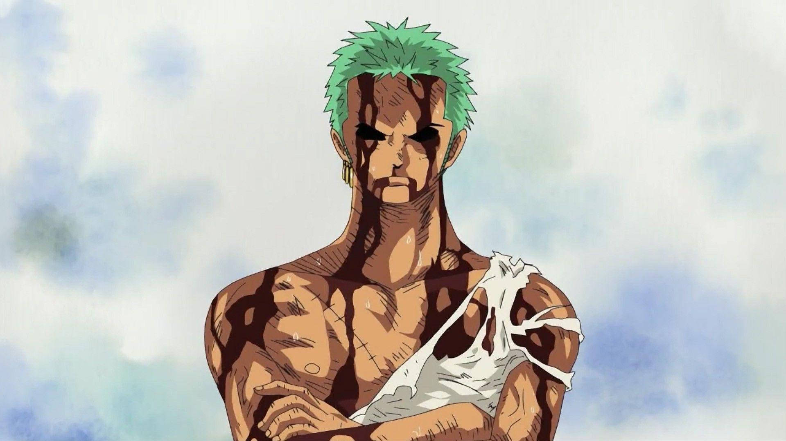

zoro gay
Espadachim habilidoso e membro da tripulação de Luffy. Conhecido por seu estilo de luta "Santoryu" (três espadas). Ambiciona se tornar o maior espadachim do mundo. Leal, determinado e com um grande senso de honra. Sua busca pela força é inspirada por seu falecido mentor, Mihawk.